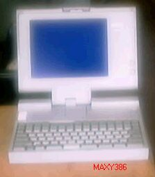

MAXYについて

これもAX規格のパソコンMAXYNOTE386Eです。
現在、全く問題なく動作します。
（2002/08/23 記）
AX規格
87年にマイクロソフトが提唱した、PC/AT互換機ベースの日本向けPCアーキテクチャ仕様。当時すでに、世界的にハードウェアのデファクトスタンダードになっていたPC/AT互換機仕様を日本でも普及させる狙いがあった。
実際の仕様策定には、シャープや三菱電機などの国内メーカー各社が参加したが、参加各社としては、独自アーキテクチャで圧倒的なシェアを誇るNECへの対抗として結集したという背景がある。AX規格では、日本語を表示するための拡張グラフィックスカード（規格化当初はEGAが主流だったため、AXでもEGAを拡張したJEGAが規定された）と日本語入力用のAXキーボードを規定し、基本的には、こうした最小限のハードウェア追加だけで、AX用MS-DOSをPC/AT互換機上で実行できるようになっていた。業界団体としてAX協議会が設立され、AX規格のPCも一定のシェアを占めるまでになったが、NECの牙城を切り崩すことはできなかった。その後、DOS/Vの登場やWindowsへの移行によって、AXの存在意義はしだいに薄れていくことになった。(アスキーデジタル用語辞典から)
AXキーボード
AXシステムで採用されたキーボード。AXキーも、101キーボードの改良型である。
(アスキーデジタル用語辞典から)
ESCキーが、PC98のキーボードと同じく、数字の１の左にある。
漢字キーで、日本語に切り替えられるなど、の特徴がある。
古いノートパソコンのページに戻る